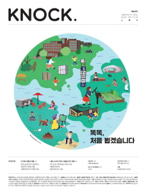
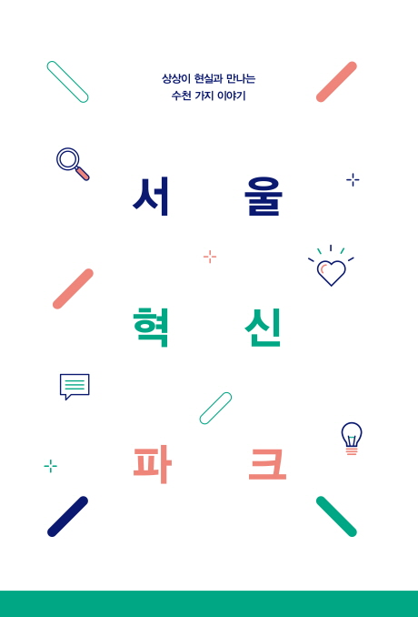
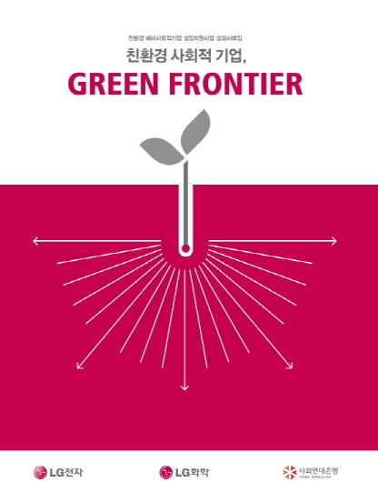
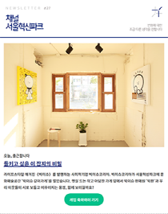
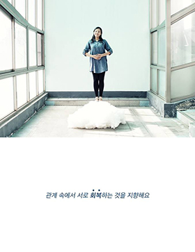

섬세하고 꼼꼼하게, 성실하고 책임감 있게
밑줄이 있는 링크를 누르시면 결과물을 보실 수 있습니다.
OFFLINE
-

소식지 기획 및 제작
2017. 06. ~ 2017. 12.
시민에 친근하게 다가갈 수 있는 매체로 신문 형태의 정기 간행물을 기획했습니다. 세부 콘텐츠의 기획, 취재, 집필은 물론 편집과 교정교열까지 경험했습니다. 소식지는 서울시내 약 5,000부를 배포했으며, 격월로 총 4회 발행했습니다.
-

브로슈어 기획 및 제작
2016. 10. ~ 2017. 09.
다양한 입주단체가 모인 서울혁신파크의 특성을 반영하여 구성품이 분리되는 키트 형태의 브로슈어를 기획했습니다. 개괄적인 내용을 담은 가이드북, 공간 소개에 용이한 가이드맵, 활용성이 높은 스티커로 다채롭게 구성했습니다.
-

성과사례집 기획 및 제작
2014. 04.
LG전자·LG화학 친환경 예비사회적기업 성장지원사업 성과사례집
3년간 운영된 친환경 사회적 기업 지원사업의 성과를 갈무리한 소책자를 기획했습니다. 연도별 사업 성과를 한 눈에 볼 수 있도록 인포그래픽 페이지를 구성하고, 지원 기업 소개와 더불어 현장의 목소리를 담은 수기도 수록했습니다.
ONLINE
-

뉴스레터 기획 및 발송
2016. 01. ~ 2017. 11. (1호 ~ 29호)
서울혁신파크 입주단체 및 행사 소개를 위한 뉴스레터를 기획했습니다. 첫 해 발송 후 디자인을 간소화하고 발행주기를 늘리는 등 구독자 설문을 바탕으로 개편을 진행했습니다. 2017년 말 기준 회당 7,200명의 구독자, 오픈율 21.5%를 기록했습니다.
-

기획 콘텐츠 운영
2015. 08. ~ 2016. 04.
300여개에 달하는 서울혁신파크 입주단체를 효과적으로 소개하기 위해 짧은 인터뷰 콘텐츠를 기획했습니다. 인상깊었던 키워드를 제목으로 강조하여 인물 사진과 함께 배치하는 방식으로 페이스북, 블로그를 통해 송출하고 콘텐츠를 액자로 제작해 전시도 운영했습니다.
ETC